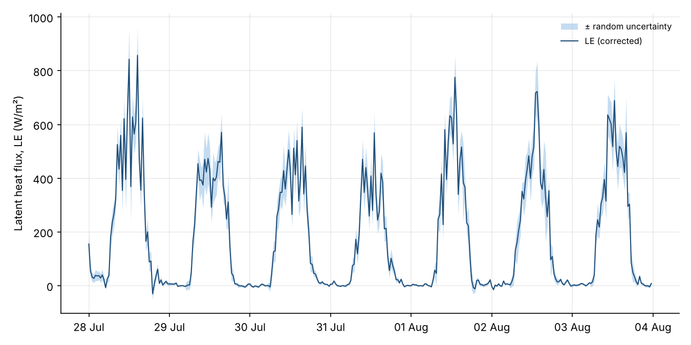
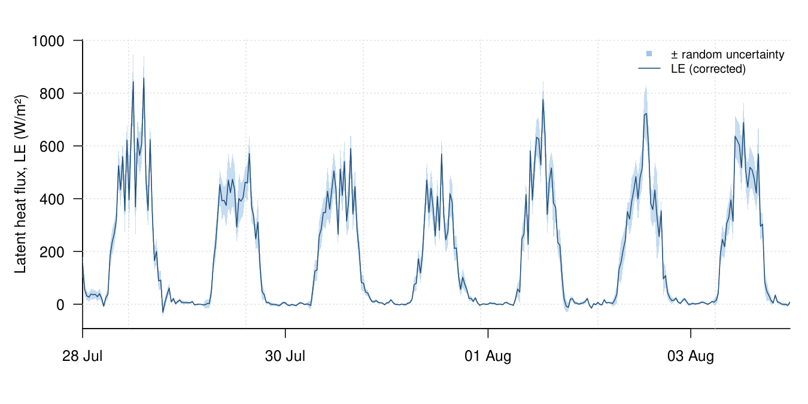
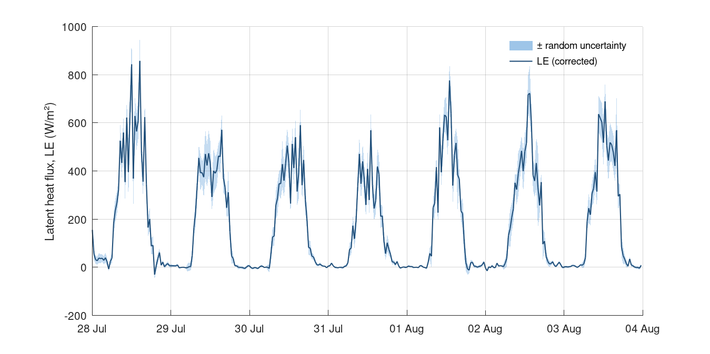

Chapter 5 · Energy Cycle and Evapotranspiration
Latent heat flux (LE) from an eddy-covariance flux tower, one week in summer
30-minute LE with random uncertainty, Willow Creek, Wisconsin, 28 Jul–3 Aug 2025.
Source: Chapter 5 draft; data: Desai (2026), AmeriFlux FLUXNET-1F US-WCr Willow Creek v1.3_r1, doi:10.17190/AMF/3028955 (CC-BY-4.0)
Data: flux_tower_LE.csv

Code: flux_tower_latent_heat.py · image: figure_python.png

"""Latent heat flux (LE) from an eddy-covariance flux tower, one week in summer
Chapter 5 draft; data: Desai (2026), AmeriFlux FLUXNET-1F US-WCr Willow Creek v1.3_r1, doi:10.17190/AMF/3028955 (CC-BY-4.0)
Run: python3 flux_tower_latent_heat.py -> figure_python.png"""
import numpy as np
import pandas as pd
import matplotlib
matplotlib.use("Agg")
import matplotlib.pyplot as plt
a = pd.read_csv("flux_tower_LE.csv")
a["TIMESTAMP_START"] = pd.to_datetime(a["TIMESTAMP_START"], format="%Y-%m-%d %H:%M:%S")
a["lo"] = a["LE_CORR_Wm2"] - a["LE_RANDUNC_Wm2"]
a["hi"] = a["LE_CORR_Wm2"] + a["LE_RANDUNC_Wm2"]
fig, axes = plt.subplots(1, 1, figsize=(9, 4.5), squeeze=False)
axes = axes[:, 0]
ax = axes[0]
ax.fill_between(a["TIMESTAMP_START"], a["lo"], a["hi"], color="#9ec5e8", alpha=0.6, lw=0, label="± random uncertainty")
ax.plot(a["TIMESTAMP_START"], a["LE_CORR_Wm2"], color="#1f4e79", lw=1, ls="-", label="LE (corrected)")
import matplotlib.dates as mdates
ax.xaxis.set_major_formatter(mdates.DateFormatter("%d %b"))
ax.set_ylabel("Latent heat flux, LE (W/m²)")
ax.legend(frameon=False, loc="upper right", fontsize=8)
ax.grid(alpha=0.25)
for s in ("top", "right"): ax.spines[s].set_visible(False)
fig.tight_layout()
fig.savefig("figure_python.png", dpi=150)

Code: flux_tower_latent_heat.R · image: figure_r.png

# Latent heat flux (LE) from an eddy-covariance flux tower, one week in summer
# Chapter 5 draft; data: Desai (2026), AmeriFlux FLUXNET-1F US-WCr Willow Creek v1.3_r1, doi:10.17190/AMF/3028955 (CC-BY-4.0)
# Run: Rscript flux_tower_latent_heat.R -> figure_r.png (base R, no packages needed)
a <- read.csv("flux_tower_LE.csv", stringsAsFactors = FALSE)
a$TIMESTAMP_START <- as.POSIXct(a$TIMESTAMP_START, format = "%Y-%m-%d %H:%M:%S", tz = "UTC")
a$lo <- a$LE_CORR_Wm2 - a$LE_RANDUNC_Wm2
a$hi <- a$LE_CORR_Wm2 + a$LE_RANDUNC_Wm2
png("figure_r.png", width = 1350, height = 675, res = 150)
par(mfrow = c(1, 1), mar = c(4.2, 4.6, 2.2, 1), las = 1)
plot(NA, xlim = range(c(a$TIMESTAMP_START, a$TIMESTAMP_START), na.rm = TRUE), ylim = range(c(a$hi, a$lo, a$LE_CORR_Wm2, 0), na.rm = TRUE), log = "", xlab = "", ylab = "Latent heat flux, LE (W/m²)", bty = "l", xaxt = "n", xaxs = "i")
grid(col = "grey88")
axis.POSIXct(1, x = a$TIMESTAMP_START, format = "%d %b")
polygon(c(a$TIMESTAMP_START, rev(a$TIMESTAMP_START)), c(a$hi, rev(a$lo)), col = adjustcolor("#9ec5e8", alpha.f = 0.6), border = NA)
lines(a$TIMESTAMP_START, a$LE_CORR_Wm2, col = "#1f4e79", lwd = 1, lty = 1)
legend("topright", legend = c("± random uncertainty", "LE (corrected)"), col = c("#9ec5e8", "#1f4e79"), lty = c(0, 1), pch = c(15, NA), bty = "n", cex = 0.8)
invisible(dev.off())

Code: flux_tower_latent_heat.m · image: figure_matlab.png

% Latent heat flux (LE) from an eddy-covariance flux tower, one week in summer
% Chapter 5 draft; data: Desai (2026), AmeriFlux FLUXNET-1F US-WCr Willow Creek v1.3_r1, doi:10.17190/AMF/3028955 (CC-BY-4.0)
% Run: run flux_tower_latent_heat.m -> figure_matlab.png (works in MATLAB and GNU Octave)
clear; close all;
fid = fopen('flux_tower_LE.csv'); fgetl(fid);
C = textscan(fid, '%s%s%f%f', 'Delimiter', ',', 'EmptyValue', NaN); fclose(fid);
a.TIMESTAMP_START = C{1};
a.TIMESTAMP_END = C{2};
a.LE_CORR_Wm2 = C{3};
a.LE_RANDUNC_Wm2 = C{4};
a.TIMESTAMP_START = strrep(a.TIMESTAMP_START, '"', '');
a.TIMESTAMP_END = strrep(a.TIMESTAMP_END, '"', '');
a.TIMESTAMP_START = datenum(a.TIMESTAMP_START, 'yyyy-mm-dd HH:MM:SS');
a_t0 = floor(min(a.TIMESTAMP_START)); a.TIMESTAMP_START = a.TIMESTAMP_START - a_t0; % offset keeps plotting precision (Octave uses single precision)
a.lo = a.LE_CORR_Wm2 - a.LE_RANDUNC_Wm2;
a.hi = a.LE_CORR_Wm2 + a.LE_RANDUNC_Wm2;
figure('Visible', 'off', 'Position', [100 100 900 450], 'Color', 'w');
subplot(1, 1, 1); hold on;
xx = a.TIMESTAMP_START(:)'; hi_ = a.hi(:)'; lo_ = a.lo(:)'; ok = ~isnan(hi_); h0 = patch('XData', [xx(ok) fliplr(xx(ok))]', 'YData', [hi_(ok) fliplr(lo_(ok))]', 'FaceColor', [0.62, 0.773, 0.91], 'EdgeColor', 'none', 'FaceAlpha', 0.6);
h1 = plot(a.TIMESTAMP_START, a.LE_CORR_Wm2, '-', 'Color', [0.122, 0.306, 0.475], 'LineWidth', 1);
xt = get(gca, 'XTick'); set(gca, 'XTick', xt, 'XTickLabel', datestr(xt + a_t0, 'dd mmm'));
ylabel('Latent heat flux, LE (W/m²)');
box off; grid on; set(gca, 'GridAlpha', 0.2, 'Layer', 'top');
legend([h0, h1], {'± random uncertainty', 'LE (corrected)'}, 'Location', 'northeast'); legend boxoff;
print('-dpng', '-r150', 'figure_matlab.png');